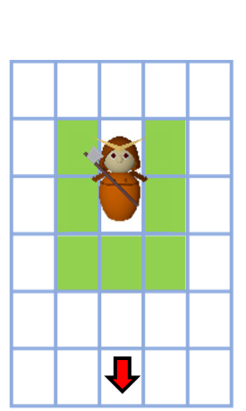

1 Game Field and Scoring
The battlefield of the game is mesh-partitioned into squares. Two corps try to occupy more the squares in the field. The winner points are given to all the samurai in the corps obtaining more squares, while, whether won or lost, individual samurai are awarded with points proportional to the number of squares which they finally occupied. Such a game is repeated with different combinations of samurai corps and the total score decides the tournamen results.
2 Actions of Samurai
Each samurai has chances to take actions in turn. Any number of actions can be chosen within their total cost of 7.
- Hide (cost 1): Samurai in friend territory can hide himself from the eyes of enemy corps.
- Show (cost 1): Hiding samurai can show himself if he is in a square with no other shown samurai.
- Move (cost 2): Samurai can move to one of four adjacent squares. No two samurai can be in a single square when both are not hiding. Hiding samurai can only move to friend territory.
- Occupy (cost 4): Samurai can occupy some of the squares close-by, making them friend territory. Occupation is possible not also for neutral or enemy teritory squares but also for squares already occupied by other samurai of the friend corps. Squares occupied depends on the weapon wielded. Enemy samurai in the occupied squares are injured, forced to warp back to his home position, and disabled his action for the prescribed number of turns.
 |
 |
 |
| Spear | Swords | Battleaxe |
Any combinations of these actions are possible: "Move to target an enemy and occupy" is one option; Ninja actions such as "Show, occupy, and hide again" or "Show, move through enemy territory to a firendly terrotry, and hide" are also be possible. This is where your "AI" is tested whether it is actually intelligent or not.
Three samurai of a corps wield different weapons (a spear, swords, or a battleaxe). The squares occupied with one action depends on the weapon wielded. When the samurai is on the square shown in the figures, squares painted green can be occupied. Occupation actions can be toward any rotations of muliples of 90 degrees of the shown direction.
3 Available Information

Information is available only on squares within the vision fields of the samurai of friend corps. Vision of a samurai is limited to squares within Manhattan distance of five from where the samurai is at. For such squares, the samurai can know whether the square has ever been occupied and, if so, who occupied it last. The position of all friend samurai and their hide/show state are known, while, for enemy samurai, their positions can only be detected when they show themselves within the vision fields of a friend samurai. Samurai AI has to decide their action based on such limited information (and the memories at actions taken before). Moving towards unexplored area for conveying information to the friends may form good tactics.